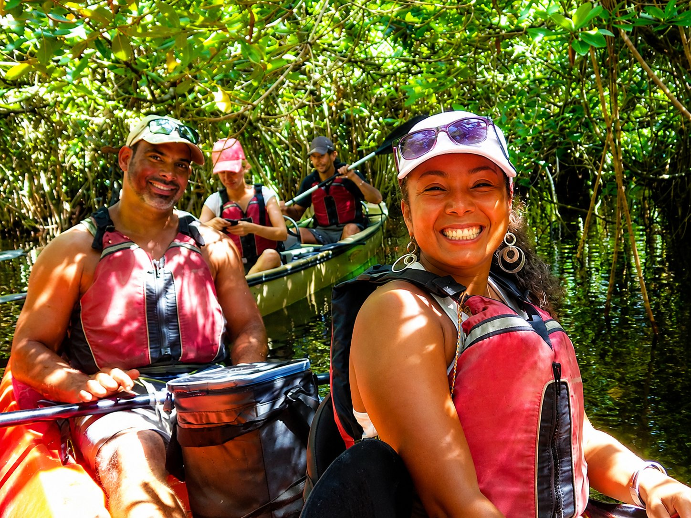
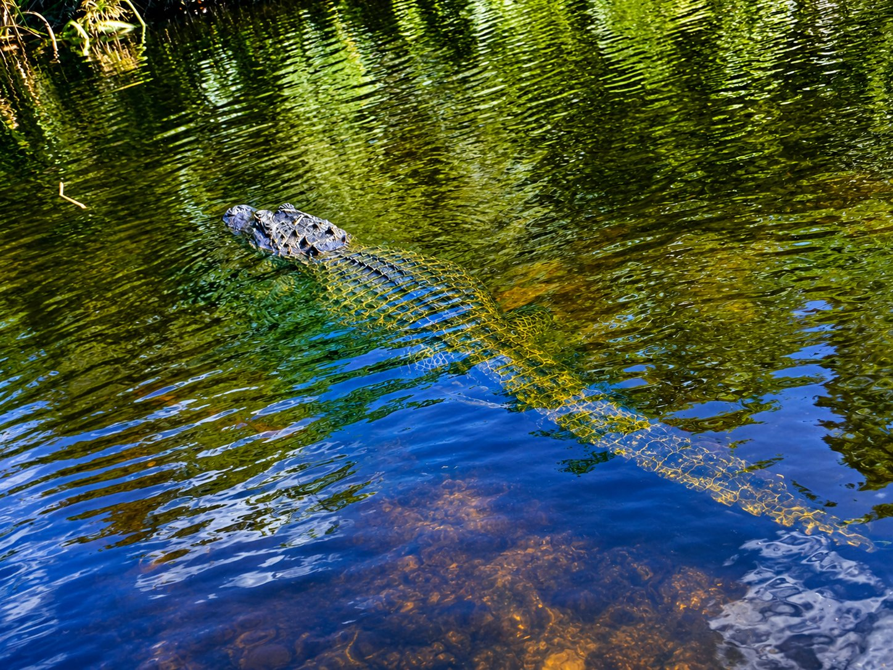
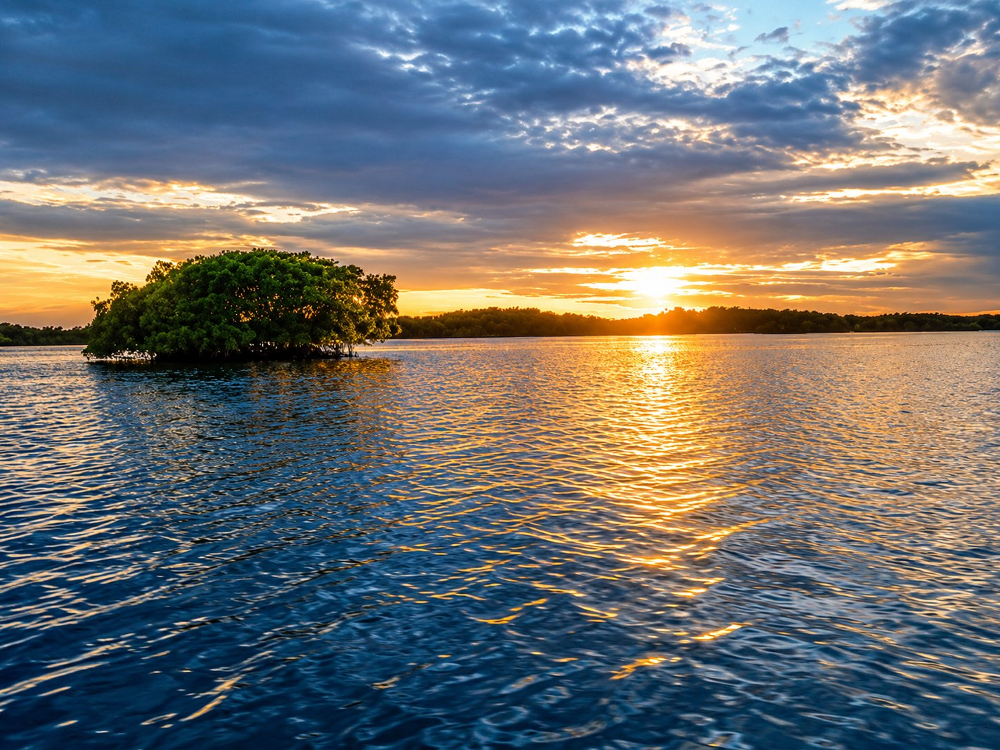

Why We're the Everglades' Most Experienced Kayak Outfitter

Mangrove Tunnel Access
We paddle into the largest mangrove forest in the northern hemisphere — dense canopies of bromeliads, orchids, and wildflowers accessible only by kayak.

Alligator Encounters
Our kayaks are stealthy and quiet. We regularly observe alligators from a safe, respectful distance that no power boat could ever achieve.

Master Naturalist Guides
All guides are formally trained Florida Master Naturalists, biologists, botanists, and outdoor educators with 25+ years in this specific ecosystem.

Orchids & Wildflowers
The mangrove canopy hosts an extraordinary collection of native orchids, bromeliads, and wildflowers. Your guide will identify every species you encounter.

National Park Access
We operate inside Everglades National Park and the 10,000 Islands National Wildlife Refuge — protected ecosystems that cannot be accessed any other way.

All Ages & Experience Levels
No kayaking experience required. Our stable kayaks and expert instruction make this accessible for children, seniors, and first-time paddlers.